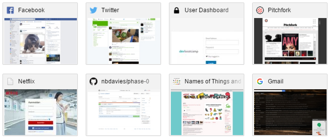
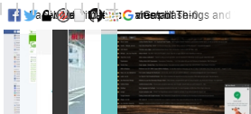

CSS Concepts:
Importance of the Display Attribute
11/8/2015
I'm here to hopefully clarify some common areas of uncertainty in CSS. But take this with a grain of salt, and consult other resources as needed.
Everything we're talking about pertains to how things display, so what does "display" do?
The first thing to be aware of is that every type of element has a default value for this. Text a la carte, or a "span" tag, has a display type of "inline", meaning that the browser will put the next thing to the right of it. But paragraphs, images, divs, by default these will all have a default display type of "block" meaning that whatever comes next will go below it.
But you can change this behavior, and tell a span to display as a "block", which might be a way of adding a linebreak after it. Or telling a div to display as inline-block, so that it still takes up a block of space, but put the next element on the same line. There is also a "none" value, which makes it so that the element doesn't display or take up any space at all.
This is the tip of the iceberg though. There are display values for lists, tables, etc., which is how those HTML elements display by default, but you could go crazy and make your lists display like tables and vice versa, if you had some good reason for wanting to do that. For most purposes, you can probably get by with "block", "inline", "inline-block", and "none".
Let's mess with a page that you probably see every day, your "new tab" in Chrome. It's got some links to frequently visited sites like this:
It behaves this way because display="inline-block". If we use Inspect Element to change this to just "block", we can see that they get arrayed vertically:
And if we change it to "inline", we can see that they're all put in a row, but they aren't treated as distinct blocks anymore:
If we change it to "none", well, there isn't anything to show for that.